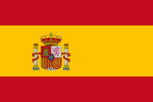

Państwo w zachodniej części Europy Południowej, położone głównie na Półwyspie Iberyjskim, obejmujące także Baleary na Morzu Śródziemnym, Wyspy Kanaryjskie na Oceanie Atlantyckim, mniejsze wysepki oraz tereny w północnej Afryce. Składa się z 17 regionów autonomicznych i dwóch miast autonomicznych. Stolicą i największym miastem jest Madryt, duże znaczenie ma również Barcelona.
Państwo ma powierzchnię 505 944 km², będąc czwartym co do wielkości państwem w Europie, po Rosji, Ukrainie i Francji. Ludność oscyluje na poziomie 50 mln. Dominuje w nim klimat subtropikalny.
| Powierzchnia |
Ludność |
PKB / os |
Waluta |
| 505 944 km² |
47 100 396 os |
32 559 USD |
Euro |
Zobacz więcej!